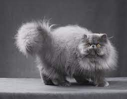
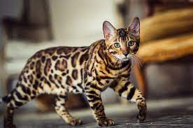
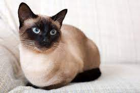

3 Popular Cats
Persian Cat
A healthy Persian cat's lifespan can be around 8 to 11 years. Persian cat personalities are sweet, gentle, and patient. They're friendly cats that prefer calm environments but can easily adapt to more active households. Persian cats love to relax and lounge around their environment.
Bengal Cat
They are extremely intelligent, alert, friendly, curious and active, demanding a lot of interaction and attention. When a Bengal cat gets bored, they can get into things and become destructive.
Siamese Cat
As one of the most affectionate and social breeds of cat, Siamese cats are renown for following their owner around the house. They're typically very playful and active and can be a great pet for families with children due to their gentle nature.
- Adult cats have 30 teeth, while kittens have 26
- A house cat is genetically 95.6% tiger.
- Cats can jump 5 times their height
- Cats sleep 12-16 hours per day, and spend 1/3 of their awake hours grooming
- Cats can dream
- An ailurophile is a person who loves cats. The word ailuro is the ancient Greek word for cat.
- There are about 88 million pet cats in the United States, which makes them the most popular pet in the country.